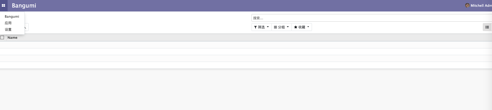
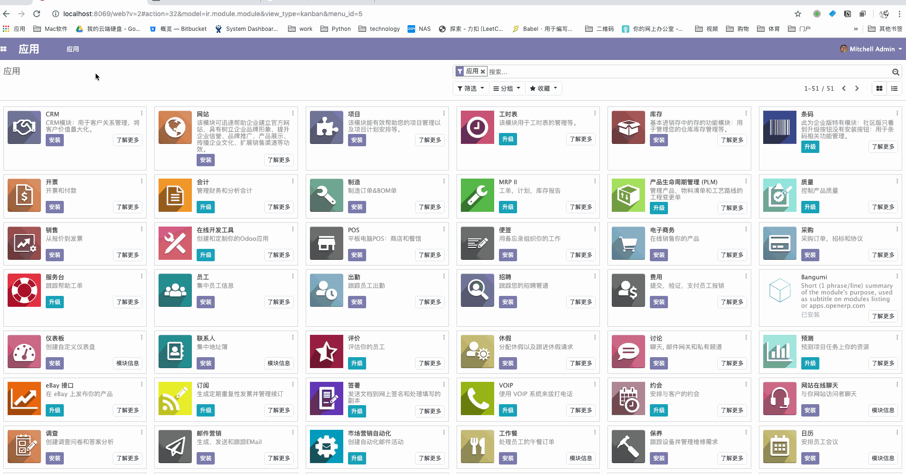

菜单创建
在我们的 bangumi 的 addon 目录下有个 views 文件夹，用于放置所有的菜单视图，列表和表单视图等视图的 XML 定义文件。
接下来我们新建一个名为 menus.xml 的文件，并且写入以下代码。
<odoo>
<act_window
id="act_bangumi_view"
name="Bangumi"
res_model="bangumi.bangumi"
view_mode="tree,kanban,form"
/>
<menuitem
id="menu_bangumi_view"
name="Bangumi"
action="act_bangumi_view"
groups="base.group_user"
/>
</odoo>
其中我们定义了两个元素：
act_window元素定义了一个客户端窗口操作，它将打开bangumi.bangumi模型，并按顺序启用列表，看板和表单视图。menuitem定义了一个名Bangumi为主菜单，这个菜单会调用前面定义的act_bangumi_view动作，并且可以看到这个菜单的权限组为base.group_user即已登陆的内部用户。
定义完 views/menus.xml 文件，我们需要将它添加到 __manifest__.py 中，并升级 bangumi 模块使其生效。
{
#...
# always loaded
'data': [
# 'security/ir.model.access.csv',
'views/views.xml',
'views/templates.xml',
'views/menus.xml',
],
#...
}
升级模块后发现，Bangumi 菜单并未出现在菜单列表中。这是什么原因导致的呢？

这就牵扯到 Odoo 的权限控制，由于我们未给 act_window 关联的模型 bangumi.bangumi 设置权限，所以我们无法看到定义好的菜单。
这一章节将不细讲 Odoo 的权限控制，我们现将以下内容复制到 security/ir.model.access.csv 文件内，这是一个 csv 文件，用于控制 Odoo 中定义的模型的权限，这段内容的意思是给我们定义的所有模型为 base.group_user 增加读、写等所有权限。
id,name,model_id:id,group_id:id,perm_read,perm_write,perm_create,perm_unlink
access_bangumi_bangumi,bangumi.bangumi,model_bangumi_bangumi,base.group_user,1,1,1,1
access_bangumi_category,bangumi.category,model_bangumi_category,base.group_user,1,1,1,1
access_bangumi_tag,bangumi.tag,model_bangumi_tag,base.group_user,1,1,1,1
然后我们再次修改__manifest__.py:
{
#...
# always loaded
'data': [
'security/ir.model.access.csv',
'views/views.xml',
'views/templates.xml',
'views/menus.xml',
],
#...
}
再次打开 Odoo 页面就可以看到我们定义的菜单和模型对应的视图了。

⚠️ 如果说在做完上述步骤后还不能看到菜单，可以尝试 gif 中的步骤，切换客户端语言。
- 点击右上角用户信息
- 切换语言后保存

导致这个问题的原因应该是前端缓存了客户端的菜单列表，若有读者通过别的更好的方式解决了这个问题，可以在 issuse 中告诉我们。